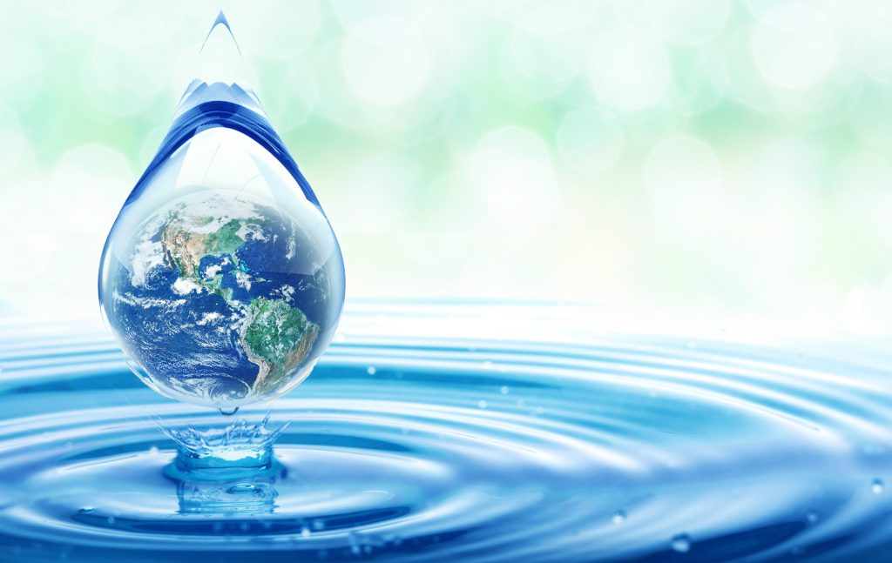
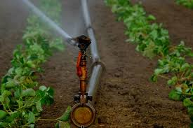

Water is essential to our daily lives. Whenever water is used, there is a potential for conservation both inside and outside of your home or business. Fresh water is a limited resource, making water conservation an important factor for the environment. With population growth, expansion of industry, increasing levels of development activity, and the potential for climate change impacts there is increasing pressure placed on the province’s water resources. Whether you are on a municipal or a private domestic water supply, water conservation is a wise practice.Here are some reasons why you might want to use less water:-
The activity of movement and control of water resources to minimize the damage to property and life and also to maximize the efficient beneficial use is known as water management. If the management of water is good in dams and levees it reduces the risk of harm caused due to flooding. Planning, developing, and managing water resources in terms of both water quantity and quality across all water applications is known as water resources management (WRM). It consists of organisations, facilities, financial aid programmes, and information systems that support and direct water management. In order to maintain clean, pure water while also safeguarding the ecosystem, water conservation is essential. Everyone relies on clean, unpolluted water for living, so we must learn how to preserve its finite supply. Water management is important since it influences what can be expected from irrigation in the future. Water management is the control of water resources according to established rules and guidelines. Due to droughts and overuse, water, once a plentiful natural resource, is becoming a more valuable commodity.
Water management is a process of developing, optimizing and planning of water resources via many practices which are defined by many policies and regulations. With the increase in the population which has been doubled to over 6 billion people from 1900, the use of water has popped up to 600%. According to the statistics, the health of people is threatened by inadequate access to clean water for drinking and sanitation.

With a well-planned system, water is supplied to many places regularly in a city. This is generally planned by civic authorities in a city. But many times we observe that some amount of water is wasted through leakage of pipe and many other reasons. As we know that proper water management is necessary for the conservation of water. Thus, it is important for civic authorities to take care of these issues while supplying water to our homes.
We can also play an important role in minimizing the wastage of the water we use. Some of those habits can be turning off the taps while brushing, mopping the floor instead of washing. A little water conservation methods that can be practised by individuals to reduce the wastage of water are provided below.
One of the oldest sites of the Indus Valley civilization, Dholavira in the state of Gujarat has well-documented lake-shaped storage reservoirs to store surface water during the rainy season.
Burhanpur, Madhya Pradesh, hosts the unique and elaborate network of well-connected water drainage and storage systems. Today the place is not so popular and is a must-visit for any hydrology student. Every fort which survives today has well-organized storage systems. This was important since forts were built to provide supplies during long-drawn wars where movement outside was constrained.
The Indian practice of cleaning water using brass vessels is well known and continues until today. Even today having water filter systems made from brass is not unusual. Older people in India use brass pots in the evening to store water and drink it during daytime.
While many technological devices are being developed to minimize water wastage, the impact will be greater if each individual contributes to water conservation by minimizing or optimizing the use of groundwater for daily work. Today, water conservation is becoming extremely critical at an individual level.
Each year our water supplies are depleting. Therefore, we can not produce artificial water and must be reliant on the available water sources on our planet earth. Water shortage is felt all over the world due to population growth and the unsustainable need for water to suit our ever-expanding modern lifestyle. It has given rise to substantial concerns about water conservation.
Water resource management traditionally involves managing water storage and water flows. Clients will need to invest in institutional reinforcement, information management, and (natural and man-made) infrastructure development to enhance water security against this backdrop of rising demand, water scarcity, growing uncertainty, greater extremes, and fragmentation challenges.
Information systems are needed for resource management, uncertain decision taking, system analysis and hydro-meteorological forecasting and warning. Investments in advanced technology to improve efficiency, preserve and protect energy, recycle storm water and wastewater and establish non-conventional water sources should be explored in addition to finding opportunities for improved water storage, including regeneration and recovery of aquifers.